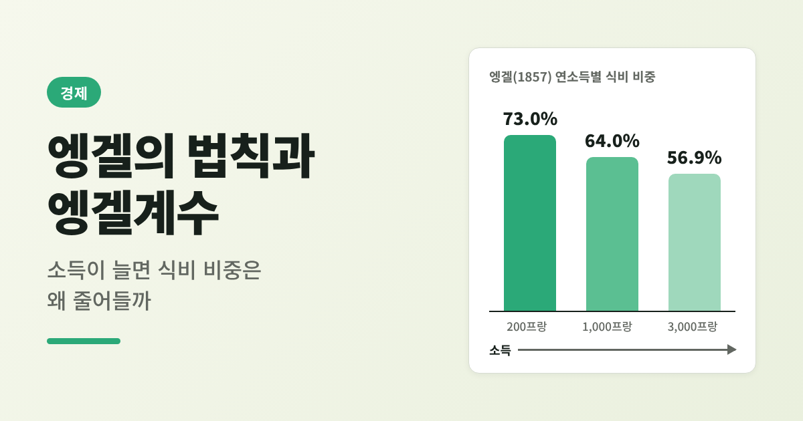
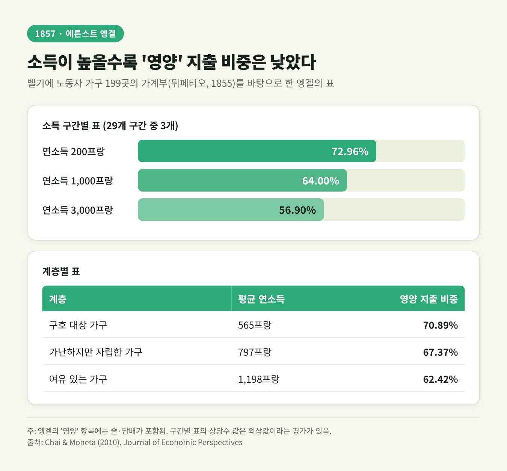
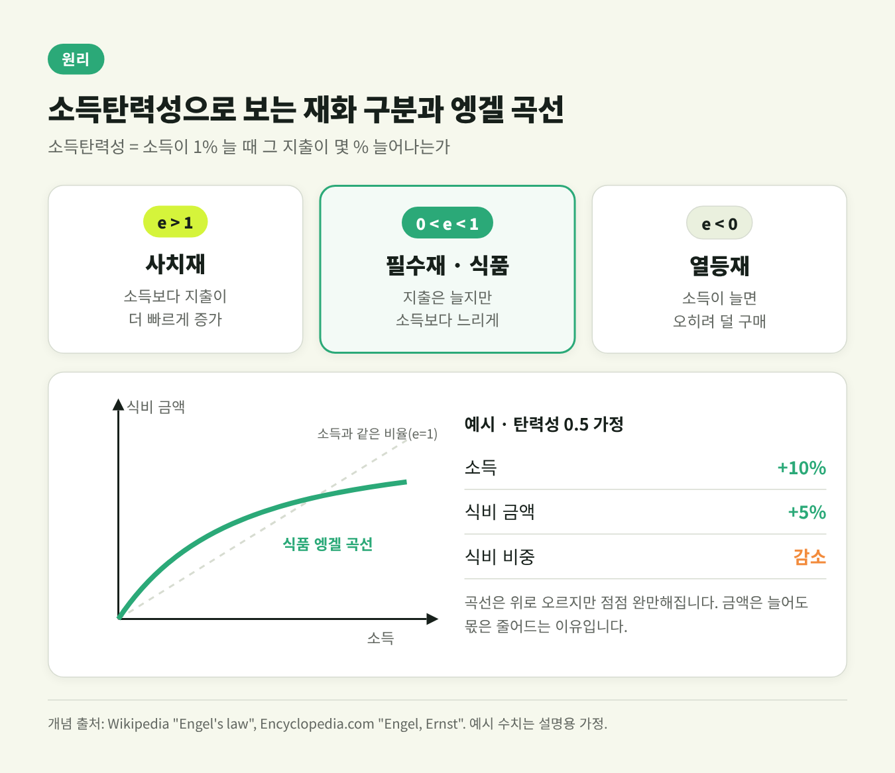
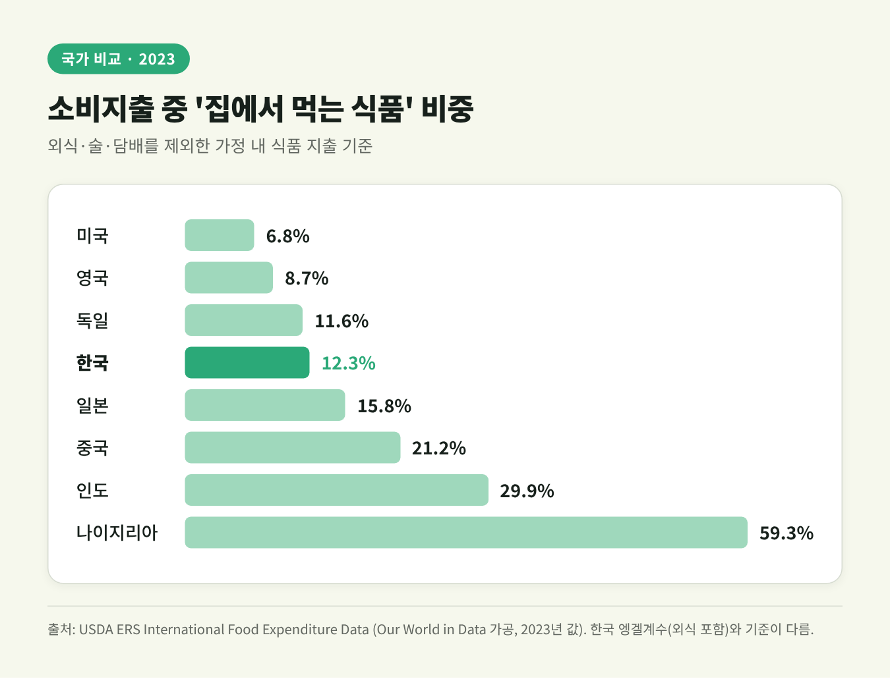
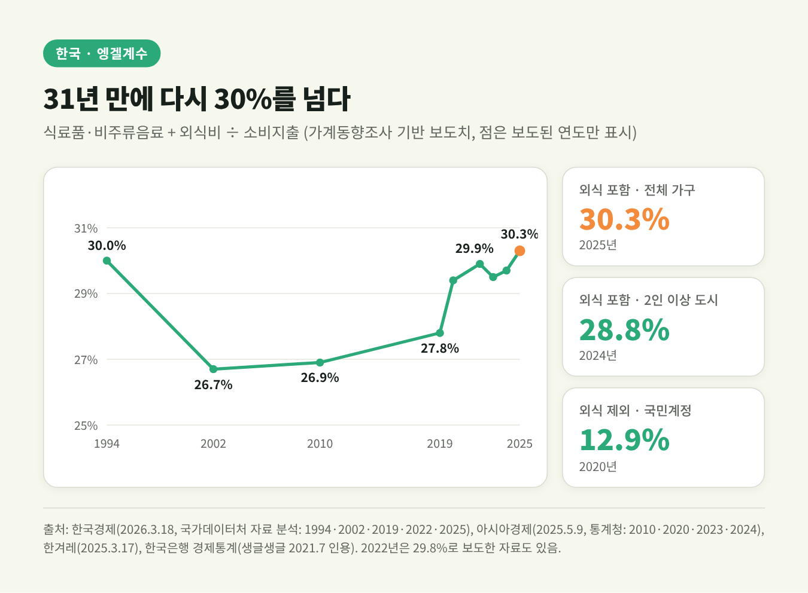
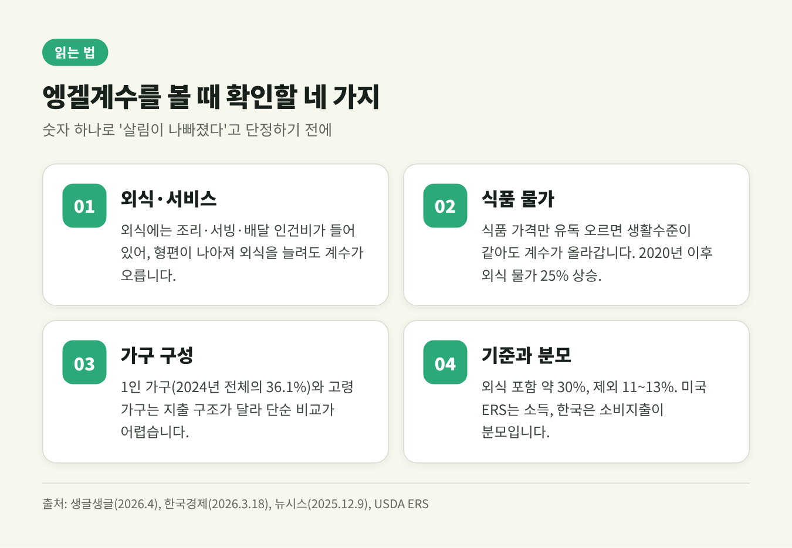
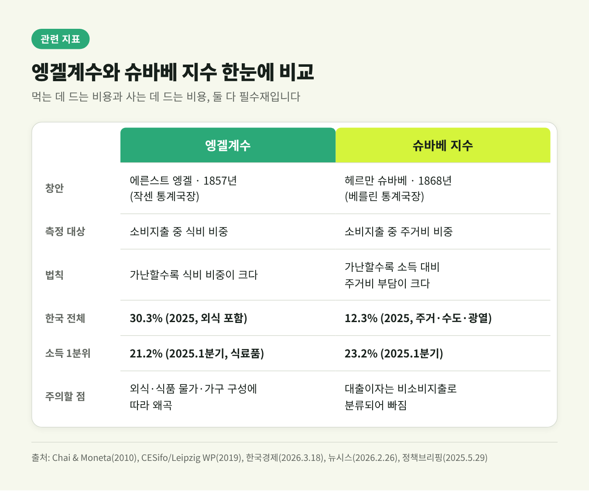

엥겔의 법칙과 엥겔계수 — 소득이 늘면 식비 비중은 왜 줄어들까

이번 글에서는 엥겔의 법칙과 엥겔계수를 정리해 보겠습니다. 소득이 늘면 식비 비중이 왜 줄어드는지, 그 원리가 어디서 왔는지부터 살펴봅니다. 이어서 미국·일본·한국의 최신 수치를 기준과 함께 비교하고, 이 지표를 생활수준의 잣대로 쓸 때 조심할 점까지 짚어 보겠습니다.
먼저 결론부터 말씀드리겠습니다.
- 엥겔의 법칙은 "소득이 늘면 식비 금액은 늘어도, 전체 지출에서 식비가 차지하는 비중은 줄어든다"는 경험 법칙입니다.
- 그 이유는 식품이 소득탄력성 0과 1 사이의 필수재이기 때문입니다.
- 다만 2025년 한국의 엥겔계수(외식 포함)는 30.3%로 1994년 이후 처음 30%를 넘었습니다. 소득이 줄어서라기보다 식품 물가, 외식 증가, 고령화가 함께 작용한 결과로 해석됩니다.
■ 1857년, 벨기에 노동자 가계부 199권에서 시작된 법칙
에른스트 엥겔(1821~1896)은 독일의 통계학자입니다. 1850년부터 1858년까지 작센 왕국 통계국장을, 이후 1861년부터 1882년까지 프로이센 통계국장을 지냈습니다.
그가 1857년에 발표한 논문의 제목은 「작센 왕국의 생산과 소비의 관계」입니다. 흔히 '벨기에 가계조사'로 알려진 이유는 핵심 자료가 벨기에에서 왔기 때문입니다. 벨기에 통계학자 에두아르 뒤페티오가 1855년에 모은 노동자 가구 199곳의 가계부가 바탕이었습니다. 프랑스 학자 르플레가 모은 가계부 36건도 있었지만, 엥겔은 표본이 너무 작다며 법칙을 끌어내는 데는 쓰지 않았습니다.
엥겔은 가구를 세 계층으로 나눠 '영양' 지출의 비중을 비교했습니다.
- 구호를 받는 가구(평균 연소득 565프랑): 70.89%
- 가난하지만 자립한 가구(797프랑): 67.37%
- 여유 있는 가구(1,198프랑): 62.42%
연소득 200프랑에서 3,000프랑까지 29개 구간으로 나눈 표에서는 차이가 더 분명했습니다. 200프랑 가구는 72.96%, 1,000프랑 가구는 64.00%, 3,000프랑 가구는 56.90%였습니다.

그가 내린 결론은 이렇습니다. "가난한 가족일수록 전체 지출 중 영양 공급에 써야 하는 비중이 크다."
몇 가지는 짚어 둘 필요가 있습니다. 엥겔의 '영양' 항목에는 술과 담배가 들어 있었습니다. 엄밀히 말해 식품만 따로 본 것은 아닙니다. 29개 구간 표의 상당수 값은 실제 관측이라기보다 엥겔이 임의로 늘려 채운 값이라는 평가도 있습니다. 엥겔 스스로도 이 법칙을 "정확한 수학식으로 표현할 수는 없다"고 적었습니다.
그럼에도 이후 150년 넘게 여러 나라의 자료가 같은 방향을 가리켰습니다. 경제학에서 가장 견고한 경험 법칙 가운데 하나로 꼽히는 이유입니다.
엥겔이 이 문제에 매달린 배경도 흥미롭습니다. 1848년 혁명 이후 노동자의 생활 여건이 사회적 관심사였고, 맬서스의 인구론도 논쟁거리였습니다. 엥겔은 소득이 늘어도 식품 수요는 그만큼 늘지 않으므로, 경제가 성장하려면 인구와 생산이 농업에서 제조업으로 옮겨 가야 한다고 보았습니다. 훗날 그는 1895년 후속 연구에서 가족 구성원 수를 성인 기준으로 환산하는 단위 '케트(quet)'를 도입했습니다. 소비 연구에서 처음 쓰인 등가척도로 평가받습니다.
■ 왜 비중이 줄어드는가 — 소득탄력성과 엥겔 곡선
원리는 의외로 단순합니다. 사람은 살기 위해 일정량을 먹어야 합니다. 하지만 소득이 두 배가 된다고 위가 두 배로 커지지는 않습니다.
경제학은 이것을 소득탄력성으로 표현합니다. 소득이 1% 늘 때 어떤 지출이 몇 % 늘어나는지를 나타내는 값입니다.
- 탄력성이 1보다 크면 사치재입니다. 소득보다 지출이 더 빠르게 늘어납니다.
- 0과 1 사이면 필수재입니다. 지출은 늘지만 소득보다 느리게 늘어납니다.
- 0보다 작으면 열등재입니다. 소득이 늘면 오히려 덜 삽니다.
식품은 대표적인 필수재입니다. 예를 들어 탄력성이 0.5라고 가정해 보겠습니다. 소득이 10% 오르면 식비는 5%만 늘어납니다. 금액은 커졌지만 지출에서 차지하는 몫은 작아집니다. 엥겔의 법칙은 결국 이 산수의 결과입니다.
이를 그래프로 그린 것이 엥겔 곡선입니다. 가로축에 소득, 세로축에 식비를 놓으면 곡선은 위로 올라가되 점점 완만해집니다. 식비가 늘기는 하지만 그 속도가 줄어드는 모양입니다. 곡선의 모양은 나이, 가족 구성, 교육 수준, 그리고 어떤 품목이냐에 따라 달라집니다.

■ 미국과 세계의 식비 비중은 어떻게 변해 왔나
시대별 변화는 미국 농무부 경제연구소(USDA ERS) 자료가 잘 보여줍니다. 여기서는 소비지출이 아니라 가처분소득 대비 식비(외식 포함)를 씁니다. 한국 엥겔계수와 분모가 다르다는 점은 기억해 두시면 좋겠습니다.
- 1960년: 17.0% (집밥 13.7%, 외식 3.3%)
- 2000년: 9.9% (집밥 5.7%, 외식 4.2%)
- 2019년: 9.5%
- 2025년: 9.7% (집밥 4.8%, 외식 4.9%)
예전엔 미국인이 소득의 6분의 1을 먹는 데 썼습니다. 지금은 10분의 1이 채 되지 않습니다. ERS는 1960~2000년의 하락을 소득 증가와 식품 공급 효율화로 설명합니다. 2000년 이후에는 하락세가 거의 멈췄습니다. 소득 증가 속도가 느려진 데다, 외식 물가가 집밥 물가보다 빠르게 올랐기 때문입니다. 2025년에는 외식 비중이 집밥 비중을 앞질렀습니다.
같은 해 안에서도 법칙은 그대로 드러납니다. 2024년 미국의 소득 하위 20% 가구는 세전소득의 33.0%를 식비로 썼습니다. 중간 20%는 12.2%, 상위 20%는 6.4%였습니다. 상위 가구가 쓴 금액(연 1만6,989달러)은 하위 가구(5,498달러)의 세 배가 넘지만, 소득에서 차지하는 비중은 5분의 1 수준입니다.
나라 사이의 차이는 더 큽니다. ERS가 집계한 2023년 소비지출 중 '가정에서 먹는 식품' 비중은 다음과 같습니다. (외식·술·담배 제외)

미국은 6.8%, 나이지리아는 59.3%입니다. 열 배 가까운 차이입니다. 한국은 12.3%로 독일과 일본 사이에 있습니다. 2016년 같은 자료에서도 미국 6.4%, 한국 13.4%, 나이지리아 58.9%로 순서는 같았습니다.
■ 한국의 엥겔계수 — 기준에 따라 숫자가 두 배 넘게 다르다
한국 엥겔계수를 볼 때 가장 먼저 확인할 것은 기준입니다. 같은 해라도 무엇을 넣느냐에 따라 숫자가 크게 달라집니다.
① 외식 포함, 전체 가구(가계동향조사) 요즘 언론이 주로 인용하는 기준입니다. 한국경제가 국가데이터처 자료를 분석한 결과, 2025년 엥겔계수는 30.3%였습니다. 1994년(30.0%) 이후 31년 만에 처음 30%를 넘어섰습니다. 같은 기사에 따르면 2002년 26.7%, 2019년 27.8%, 2022년 29.9%였습니다. 아시아경제가 인용한 통계청 자료로는 2010년 26.9%, 2020년 29.4%, 2023년 29.5%, 2024년 29.7%입니다. (2022년은 29.8%로, 한국경제 수치와 0.1%포인트 차이가 납니다.)
국가데이터처의 2025년 연간 지출 발표에서도 흐름이 보입니다. 소비지출 중 음식·숙박이 15.8%, 식료품·비주류음료가 15.3%였습니다. 밖에서 먹는 데 쓴 돈이 장보기 비용을 앞선 것입니다. 다만 음식·숙박에는 숙박비도 들어 있어, 두 항목을 단순히 더한 값(31.1%)은 엥겔계수보다 조금 큽니다.
② 외식 포함, 2인 이상 도시 가구 한겨레가 통계청 가계동향조사를 분석한 결과, 2024년 식비 비중은 28.8%였습니다. 같은 해 식비 가운데 외식비가 50.2%로 처음 절반을 넘었습니다.
③ 외식 제외, 식료품·비주류음료만(한국은행 국민계정) 엥겔의 원래 개념에 가까운 좁은 기준입니다. 1990년 20%대에서 2019년 11.4%까지 내려갔다가, 2020년 12.9%로 올랐습니다.

더 거슬러 올라가면 하락 폭이 뚜렷합니다. 통계청 분석에 따르면 도시가계 엥겔계수는 1980년 42.9%, 1985년 36.9%, 1990년 약 32%(추계)였습니다. 소득 수준이 빠르게 오르던 시기, 한국 역시 엥겔의 법칙을 그대로 따라 내려왔습니다.
그 흐름이 2000년대 이후 멈췄고, 최근 몇 년은 오히려 반등했습니다. 이것이 지금 한국에서 엥겔계수가 다시 화제가 된 이유입니다.
■ 최근 엥겔계수 반등, 무엇이 끌어올렸나
반등을 두고 거론되는 요인은 크게 다섯 가지입니다.
식품 물가. 2020년 이후 6년째 식품 물가 상승률이 소비자물가를 1~2%포인트 웃돌았습니다. 2020년 이후 누적으로 보면 소비자물가가 16.7% 오르는 동안 농축수산물은 26%, 가공식품은 24%, 외식은 25% 올랐습니다. 2025년만 봐도 소비자물가 2.1%, 식품 물가 3.2%였습니다. 덜 먹어도 식비 비중은 오를 수 있습니다. 실제로 2025년 식료품·비주류음료 실질 지출은 1.1% 줄었습니다.
외식과 배달의 일상화. 외식 한 끼에는 재료비뿐 아니라 조리·서빙·배달 인건비가 들어 있습니다. 같은 끼니를 사 먹으면 식비가 커질 수밖에 없습니다. 2022년부터 2024년까지 외식 물가는 17.7% 올랐고, 2인 이상 도시 가구의 외식비 지출은 35.2% 늘었습니다.
'작은 사치' 소비. 집이나 차 같은 큰 지출은 미루고, 외식·디저트처럼 적은 돈으로 만족을 얻는 소비가 늘었다는 분석입니다.
고령화와 1인 가구. 연금에 기대는 고령 가구일수록 지출에서 식비 비중이 큰 경향이 있습니다. 1인 가구는 2024년 전체 가구의 36.1%까지 늘었고, 이 가운데 70세 이상이 19.8%로 가장 많습니다. 1인 가구는 소비지출의 18.2%를 음식·숙박에, 13.6%를 식료품에 씁니다.
소비 여력 압박. 2025년 가구소득은 3.4% 늘었지만 세금·이자 같은 비소비지출은 5.7% 늘었습니다. 쓸 수 있는 돈이 빠듯해지면 줄이기 어려운 식비의 몫이 커집니다.
이웃 일본도 비슷합니다. 총무성 가계조사(2인 이상 세대)에서 2025년 엥겔계수는 28.6%로, 1981년(28.8%) 이후 44년 만에 가장 높았습니다. 일본은 2025년 식료품 물가가 6.8% 올랐고, 식비는 실질로 1.2% 줄었지만 명목으로는 5.5% 늘었습니다. 덜 사고도 더 낸 셈입니다.
■ 엥겔계수를 생활수준 지표로 쓸 때의 한계
엥겔계수는 지금도 유용한 지표입니다. 같은 나라, 같은 시기 안에서 소득계층을 비교하면 법칙은 놀라울 만큼 잘 맞습니다. 2025년 1분기 한국의 소득 1분위 가구는 소비지출의 21.2%를 식료품에 썼습니다. 일본에서도 최저 소득층이 34.4%, 최고 소득층이 24.1%였습니다.
하지만 이 숫자 하나로 "살림이 나빠졌다"고 단정하기에는 걸리는 점이 있습니다.

첫째, 외식이 늘면 계수가 오릅니다. 외식에는 식재료가 아니라 노동과 편의가 섞여 있습니다. 생활이 윤택해져 외식을 늘려도 계수는 올라갑니다. 2인 이상 도시 가구에서 소득 상위 20%는 식비의 56.5%를 외식에 썼고, 하위 20%는 64.9%를 식료품에 썼습니다. 같은 '식비'라도 내용이 다릅니다.
둘째, 상대 물가가 움직이면 계수도 움직입니다. 식품 가격만 유독 오르면 생활수준이 그대로여도 계수는 올라갑니다. 한국은 곡물 자급률이 20% 안팎이라 국제 농산물 가격의 영향을 크게 받습니다.
셋째, 가구 구성이 바뀌면 비교가 어려워집니다. 1인 가구와 고령 가구는 지출 구조 자체가 다릅니다. 엥겔이 1895년에 가구원 수를 보정하는 단위를 만든 것도 같은 고민에서였습니다.
넷째, 기준이 제각각입니다. 외식을 넣으면 30% 안팎, 빼면 11~13% 수준입니다. 미국 ERS는 소득을, 한국은 소비지출을 분모로 씁니다. 기사나 보고서에서 엥겔계수를 보시면, 숫자보다 기준을 먼저 확인하시길 권합니다.
국가 간 비교에도 한계가 있습니다. 연구에 따르면 엥겔계수는 1인당 소득 격차가 큰 나라들 사이에서는 차이를 잘 설명하지만, 소득 수준이 비슷한 나라끼리는 예측력이 떨어집니다.
■ 집세에도 법칙이 있다 — 슈바베 지수
엥겔과 같은 시대에 비슷한 관찰을 한 사람이 있습니다. 베를린 통계국장 헤르만 슈바베는 1868년 공무원의 급여와 임대료 자료 등을 분석해 이렇게 정리했습니다. "가난할수록 소득에 비해 주거에 써야 하는 금액이 크다."
이것을 슈바베의 법칙, 소비지출 중 주거비 비중을 슈바베 지수라고 부릅니다. 주거 역시 소득탄력성이 1보다 작은 필수재라는 뜻입니다. 미국 미시 자료를 쓴 연구에서도 주거비의 소득탄력성은 1보다 작게 나타났습니다.
이 법칙에는 불편한 함의가 있습니다. 임대료가 오르면 모든 가구가 손해를 보지만, 소득에서 주거비 비중이 큰 저소득층이 더 크게 다칩니다.
한국에서도 같은 모습이 보입니다. 2016년 소득 1분위의 슈바베 지수는 16.96%로, 2003년 통계 작성 이후 가장 높았습니다. 5분위는 8.38%였습니다. 2025년 연간 기준 전체 가구의 주거·수도·광열 비중은 12.3%입니다. 하지만 1인 가구는 18.4%(2024년), 소득 1분위는 23.2%(2025년 1분기)입니다. 소득 1분위는 식료품과 주거비만으로 소비지출의 44%가량을 쓰는 셈입니다.

참고로 가계동향조사에서 주택담보대출 이자는 소비지출이 아니라 비소비지출로 분류됩니다. 대출을 끼고 집을 산 가구의 실제 주거 부담은 슈바베 지수에 다 잡히지 않을 수 있습니다. 엥겔계수와 슈바베 지수를 함께 보면, 한 가구의 '버티는 데 드는 비용'이 조금 더 입체적으로 보입니다.
정리하면 이렇습니다.
엥겔의 법칙은 170년 가까이 지난 지금도 유효합니다. 소득이 늘면 식비 비중은 줄어듭니다. 미국의 1960년과 2025년, 한국의 1980년과 2000년대가 그것을 보여줍니다. 그러나 오늘의 엥겔계수는 '얼마나 가난한가'만 말해 주지 않습니다. 식품 물가, 외식이라는 서비스, 혼자 사는 사람과 나이 든 사람의 늘어남이 한 숫자 안에 함께 들어 있습니다.
결국 남는 것은 하나입니다. 엥겔계수가 몇 퍼센트인지보다, 그 안에 무엇이 들었는지를 읽어야 한다는 것입니다.
최근의 30.3%가 걱정할 만한 신호냐고 물으신다면, 숫자 자체보다 그 구성을 먼저 들여다보자고 답하겠습니다.
참고자료
- Chai, A. & Moneta, A. (2010), "Retrospectives: Engel Curves", Journal of Economic Perspectives — PDF
- Encyclopedia.com, "Engel, Ernst" — 링크
- Wikipedia, "Engel's law" — 링크
- USDA ERS, Food Prices and Spending — 링크
- USDA ERS, Food spending as a share of income declines as income rises (2026.4.30) — 링크
- USDA ERS Amber Waves (2020.11), Average Share of Income Spent on Food… — 링크
- Our World in Data, Share of consumer expenditure spent on food (USDA ERS) — 링크
- 한국경제 (2026.3.18), 연금소득 의존해도 외식은 포기안해… — 링크
- 한국경제 사설 (2026.3.18), 엥겔계수 역주행… — 링크
- 생글생글 (2026.4), 엥겔계수와 생활수준 — 링크
- 뉴시스 (2026.2.26), 작년 실질소비지출 감소세 전환 — 링크
- 한국경제 (2026.2.26), 2025년 4분기 가계동향 — 링크
- 아시아경제 (2025.5.9), 식비·엥겔계수 — 링크
- 한겨레 (2025.3.17), 식비 중 외식비 비중 50% 처음 넘었다 — 링크
- 대한민국 정책브리핑 (2025.5.29), 2025년 1분기 가계동향조사 — 링크
- 뉴시스 (2025.12.9), 2025 통계로 보는 1인 가구 — 링크
- 사키가케신보 (2026.2.6), 食費割合44年ぶりに高水準 28・6% — 링크
- 第一生命経済研究所, エンゲル係数 분석 — 링크
- 서울신문 (1991.3.20), 엥겔계수 계속 낮아져 — 링크
- 생글생글 (2021.7), 엥겔지수 — 링크
- CESifo/Leipzig Working Paper (2019), Distributional Effects of Surging Housing Costs under Schwabe's Law — PDF
- 머니투데이 (2017.7), 서민층 '슈바베계수' 최고치 — 링크